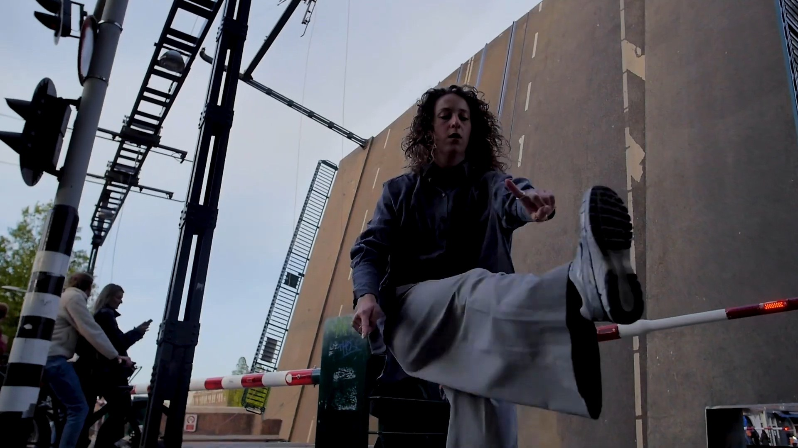
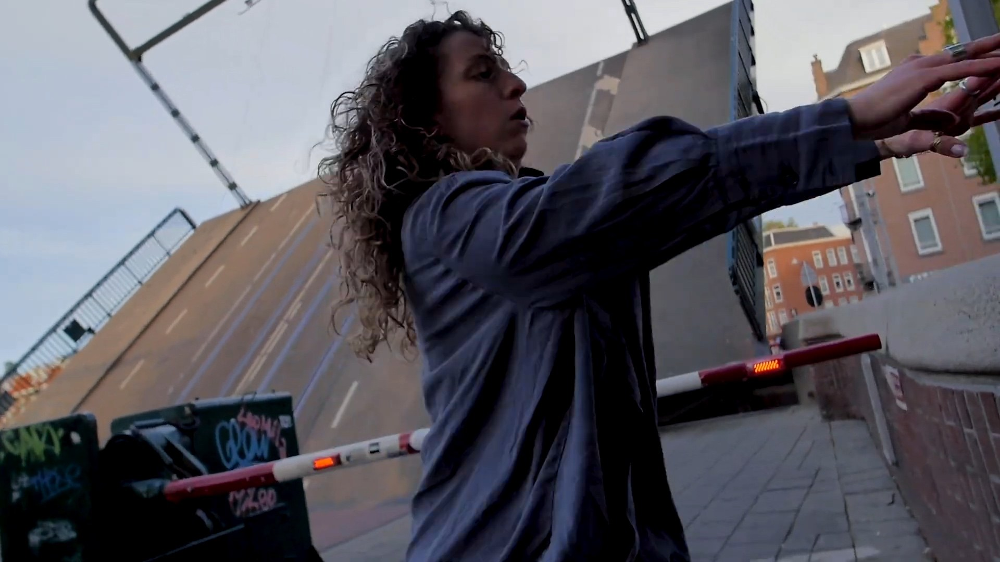

A practice by dEUSeXmACHINA films
The Session
The Session is where the film happens.
An audiovisual practice built on the encounter between a real person, a real place, a camera, movement and time.
The participant — usually a dancer or performer — is invited to be themselves. The location is an active part of the work. The filmmaker, who is also a dancer, responds physically to the performer with the camera.
The aim is not to predetermine the film, but to create the conditions for something unexpected to happen.
We don't create everything. We create the conditions for something to happen.
Visual introduction

The process
Meet
Two people, before anything is filmed.
Location
The agreement of a trajectory.
One take
An improvised sequence.
Film
Captured presence.
Mistakes, accidents and unexpected events may become part of the work.
The movement exists in time.
Whenever appropriate, long takes and continuous shots. The dancer should not have to dance the edit.
The sessions
A person enters a place.
The camera begins to move.
Something unexpected happens.
The film emerges.
The Session is where the film happens.